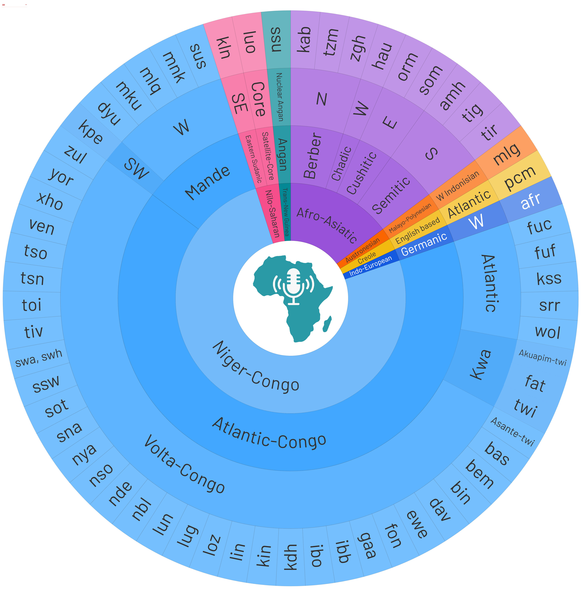
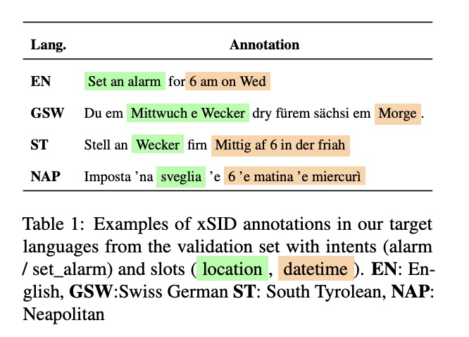

My research interests lie in natural language processing and machine learning, with a focus on cultural representation and inclusivity in large language models. I am particularly interested in developing technologies that serve underrepresented language communities and bridge cross-cultural gaps in NLP systems.
News
We have a paper accepted to EMNLP 2026.
We have a paper accepted to NAACL 2025.
We have a paper accepted to EMNLP 2024.
We have a paper accepted to ArabicNLP 2024.
I will join UBC as a new Ph.D. student in Fall 2024.
Publications

Voice of a Continent: Mapping Africa's Speech Technology Frontier
AbdelRahim Elmadany,
Sang Yun Kwon,
Hawau Olamide Toyin,
Alcides Alcoba Inciarte,
Hanan Aldarmaki,
Muhammad Abdul-Mageed
arXiv preprint, 2025
Paper
A comprehensive survey mapping the current state of speech technology for African languages.
JAWAHER: A Multidialectal Dataset of Arabic Proverbs for LLM Benchmarking Sang Yun Kwon,
Samar Magdy,
Fakhraddin Alwajih,
Safaa Taher Abdelfadil,
Shady Shehata,
Muhammad Abdul-Mageed
NAACL, 2025
Paper
A multidialectal dataset of Arabic proverbs for LLM Benchmarking.
Gazelle: An Instruction Dataset for Arabic Writing Assistance
Samar Magdy,
Sang Yun Kwon,
Fakhraddin Alwajih,
Reem Abdel-Salam,
Muhammad Abdul-Mageed
EMNLP, 2024 | Oral Presentation Paper
A comprehensive dataset and evaluation framework for Arabic writing assistance.
Beyond English: Evaluating LLMs for Arabic Grammatical Error Correction Sang Yun Kwon,
Gagan Bhatia,
El Moatez Billah Nagoudi,
Muhammad Abdul-Mageed
ArabicNLP co-located with ACL, 2024 | Oral Presentation Paper
Exploring the performance of instruction-finetuned large language models (LLMs) in Arabic Grammatical Error Correction.

SIDLR: Slot and Intent Detection Models for Low-Resource Language Varieties
Sang Yun Kwon,
Gagan Bhatia,
El Moatez Billah Nagoudi,
Alcides Alcoba Inciarte,
Muhammad Abdul-Mageed
VarDial workshop co-located with EACL, 2023
Paper
Shared task on slot and intent detection for low-resource language varieties.
{kind=link}